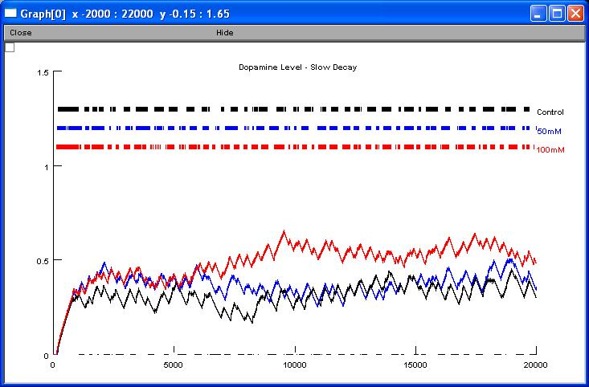

NEURON mod files from the paper: M. Migliore, C. Cannia, CC Canavier, A modeling study suggesting a possible pharmacological target to mitigate the effects of ethanol on reward-related dopaminergic signaling, J. Neurophysiol., in press (2008). We use a realistic computational model of dopaminergic neurons in vivo to suggest that ethanol, through its effects on Ih, modifies the temporal structure of the spiking activity. The model predicts that the dopamine level may increase much more during bursting than pacemaking activity, especially in those brain regions with a slow dopamine clearance rate. The results suggest that a selective pharmacological remedy could thus be devised against the rewarding effects of ethanol that are postulated to mediate alcohol abuse and addiction, targeting the specific HCN genes expressed in dopaminergic neurons. Usage: The file fig3.hoc reproduces the results shown in Fig.3 of the paper. To start the simulation: --- Under unix systems: to compile the mod files use the command nrnivmodl and run the simulation hoc file with the command nrngui fig3.hoc --- Under Windows systems: to compile the mod files use the "mknrndll" command. A double click on the simulation file fig3.hoc will open the simulation window. --- Under MAC OS X: Drag and drop the extracted folder onto the mknrndll icon. Drag and drop the mosinit.hoc onto the nrngui icon. --- Once the simulation is running: Each simulation (control, 50mM, 100mM) takes about 800sec of real time and can be started by pressing the button so labeled. After they are run you should have a graph that looks like:  Questions on how to use this model should be directed to michele.migliore@pa.ibf.cnr.it